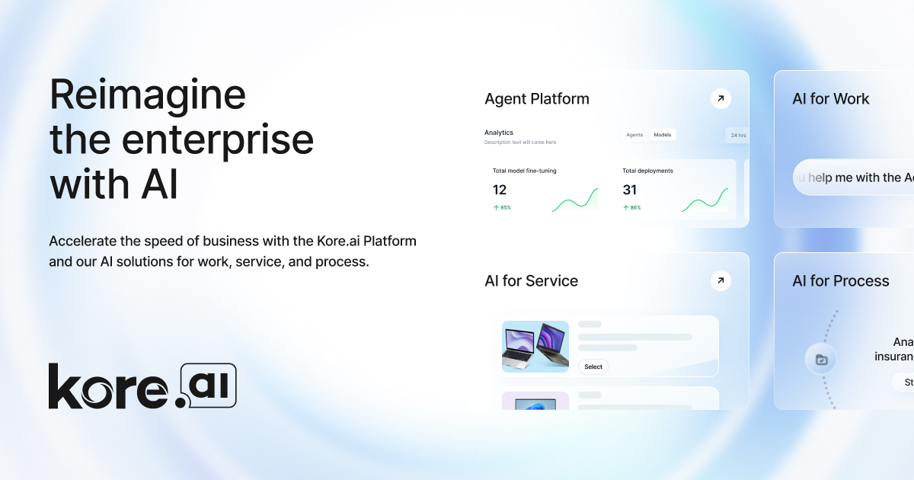

Kore.ai x Atos: l'IA agentique souveraine cible les entreprises britanniques
Le 8 juillet 2026, Kore.ai annonce un partenariat avec Atos UK&I pour livrer des systèmes IA multi-agents souverains aux organisations britanniques régulées. Le signal est net: l'IA souveraine descend dans la couche agentique, avec orchestration, gouvernance et passage en production.

1. Ce qui est annoncé
Kore.ai et Atos UK&I indiquent vouloir développer des solutions agentiques intégrées pour les secteurs régulés britanniques. L'annonce combine la plateforme Kore.ai, ses capacités de gouvernance et d'orchestration multi-agents avec le Sovereign Agentic Studio d'Atos, son infrastructure de production et son expertise locale au Royaume-Uni.
2. Pourquoi c'est important pour l'IA souveraine
La souveraineté ne se limite plus au choix d'un cloud ou d'un modèle. Dès que des agents déclenchent des actions métier, la question devient opérationnelle: périmètre d'autonomie, traçabilité, résidence des données, droits d'accès et supervision humaine. Le partenariat Kore.ai x Atos confirme que les environnements régulés veulent passer des pilotes IA à des systèmes agentiques gouvernables.
3. Lecture opérationnelle pour les organisations
Pour Odoo Belgique, Odoo France et Odoo Entreprise, cette annonce renforce une priorité: concevoir les agents autour des processus et des contrôles, pas seulement autour du modèle. Les équipes doivent préciser quels agents peuvent lire, décider, écrire, escalader ou bloquer une opération, puis relier ces droits à l'ERP, aux journaux d'audit et aux règles de conformité.
Mettre en place une cartographie des agents: données accessibles, actions autorisées, garde-fous, seuils d'escalade et traces d'audit par processus métier.
Cadrer les agents IA